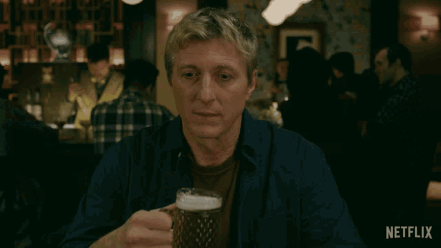

Após vencer o Torneio All Valley, você descobre uma pista sobre o prestigioso Torneio Sekai Taikai. Para se qualificar, você deve superar uma série de desafios que testarão suas habilidades de karatê e coragem. Você está pronto para começar?
Você decide que está pronto para o desafio. Seu primeiro teste é encontrar uma pista importante na cidade de Los Angeles. Onde você começa sua busca?
Você decide que ainda não está pronto e prefere treinar mais antes de enfrentar o desafio. Enquanto treina, você se pergunta o que teria encontrado no caminho para o Torneio Sekai Taikai.
No Cobra Kai Dojo, você descobre que a primeira pista leva a um desafio na região montanhosa da Califórnia. É hora de se preparar para o próximo desafio.
No Miyagi-Do Dojo, você encontra uma pista que o direciona para a região montanhosa da Califórnia. Agora é hora de enfrentar o próximo desafio.
Na região montanhosa da Califórnia, você encontra um dojo escondido onde o próximo desafio é realizar um treino especial. Você está pronto para enfrentar este treinamento?
Você enfrenta o treinamento com sucesso e descobre que o próximo desafio é viajar para o Japão para se qualificar para o Torneio Sekai Taikai.
Você decide que o treinamento é muito difícil e volta para casa, refletindo sobre o que poderia ter conquistado.
No Japão, você descobre o local do Torneio Sekai Taikai. Você está prestes a enfrentar os melhores lutadores do mundo. Seu desafio final é qual caminho seguir para a arena do torneio.
O caminho principal leva você diretamente à arena do torneio. Após uma série de lutas desafiadoras, você finalmente se sagra campeão do Torneio Sekai Taikai!

O caminho alternativo leva você a um caminho difícil e sinuoso, mas você encontra uma nova perspectiva sobre a arte do karatê. Apesar de não chegar à arena, você aprende valiosas lições e retorna com uma nova visão.